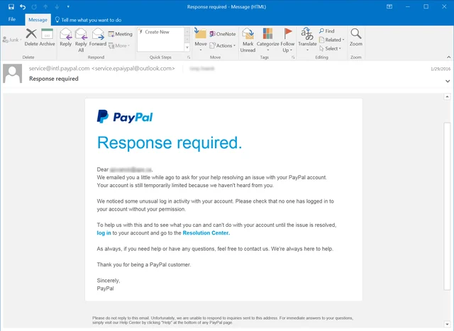
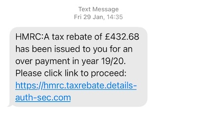
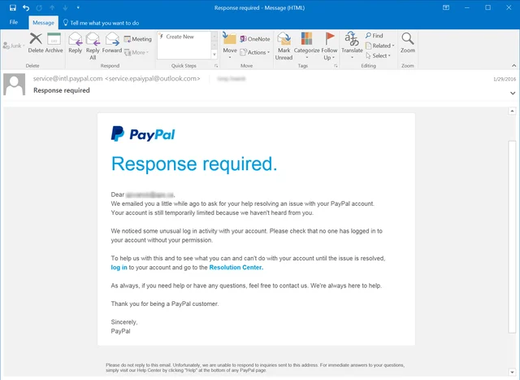
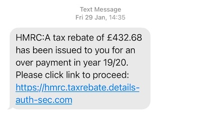

WHAT IS PHISHING?
Phishing is a type of cyberattack that uses disguised email to trick the recipient into giving up information, downloading malware, or taking some other desired action.
HOW DOES PHISHING WORK?
Phishing attacks are carried out by email spoofing or instant messaging, and it often directs users to enter personal information at a fake website that looks identical to the legitimate site.
EXAMPLES OF PHISHING
 



HOW TO AVOID PHISHING?
Here are some tips to avoid phishing:
- Be cautious about all communications you receive.
- Look for misspellings and grammatical errors.
- Hover over links to see the actual URL.
- Don't click on links or download attachments from unknown sources.
- Use security software to protect your computer.